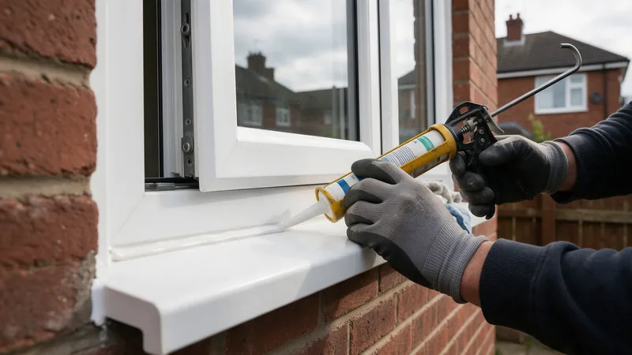

The repair is usually the right job
A uPVC window or door is a frame with a set of moving parts bolted to it, and the moving parts are the things that fail. Handles go floppy, friction hinges stiffen up, gaskets shrink and harden, and the multipoint strip down the edge of a door wears until you have to lift and lean to lock it. None of that means the window has had it.
The frame is the expensive part and it is usually the part that is fine. So a repair is often an hour and a part, against a day and a new window. We would rather do the hour and be the firm you ring in ten years when the frame really has gone.
The four things we get rung about
A door you have to lift hard: that is the mechanism, the alignment or both, and it gets worse not better. A handle that spins and does nothing: usually the gearbox or the spindle. A window that will not stay open or drags on the frame: friction hinges. Draughts and whistling: gaskets that have gone hard, or a sash that is not pulling up evenly because something has dropped.
Making safe
Broken glass and a door that will not lock after damage are the two we drop other things for. The first visit is making it safe: clearing the glass, boarding the opening or putting temporary glass in, and getting the door shutting and locking again. The proper repair comes after, measured in daylight. There is more on the Urgent help page.
 Generated photo
Generated photoGenerated for this demo. Not a photograph of a real job.

Generated photoA tidy seal outside is half of what keeps the weather out. Generated for this demo.
On the day
How this one usually goes.
- Show us what it doesWe get you to open and lock it the way you normally do. How somebody describes lifting a handle tells us more than a photograph.
- Find the part, not the symptomA stiff door is usually three things in a row. Working out which one started it is the difference between a repair that holds and one that comes back.
- Say what it needs before touching itIncluding when the honest answer is that it is not worth repairing. You get both options and the reason, not a sales pitch.
- Fit the part and set it properlyNew hinge, handle, gearbox, gasket or keep, then the door or sash adjusted so it pulls up evenly rather than being forced to fit.
- Test it with you thereLocked and unlocked a dozen times, the window opened and closed, and what to watch for if it starts going again.
A sample running order for this demo. Yours depends on the house.
Questions
Asked about this job.
My door needs lifting hard to lock. Is that serious?
It is the warning light for a uPVC door. Lifting hard means the hooks are not lining up with the keeps, so the mechanism is taking strain every time. Sorted early it is an adjustment or one part. Left long enough the gearbox breaks, usually when the door is shut.
Is it worth repairing an old window?
If the frame is sound, nearly always. The frame is the expensive bit and the moving parts are cheap by comparison. If the frame has gone, repairing the hardware is throwing good money after bad, and we will say so.
Can you match old handles and hinges?
Usually. There are a handful of common patterns and most things made in the last twenty five years still have parts. Where something is genuinely obsolete, there is often a modern equivalent that fits the same screw centres.
Do you do emergency boarding?
Yes. Broken glass or a door that will not lock after damage gets made safe first, which means the glass cleared and the opening boarded or temporary glass fitted. Then we measure for the real repair in daylight.
General trade knowledge written for this demo, not advice on your house.
Our work
Sample jobs like this.
Generated photoHandle and hinges, not a new windowLymm Sample Generated photoBoarded up for the nightRuncorn Sample
Generated photoBoarded up for the nightRuncorn Sample Generated photoCloudy unit swapped outRuncorn Sample
Generated photoCloudy unit swapped outRuncorn SampleMade up samples with generated pictures. Tap one for the detail.
Also
The other things we do.
Replacement windows
Whole houses and single openings. Measured properly, made to those sizes, and fitted without taking the plaster off with them.
More →Composite and front doors
A solid door, a frame that fits the opening, and a lock that works with one hand full of shopping. Colour, glass and furniture your pick.
More →Bifold and patio doors
Bifolds that stack back and leave the opening clear, sliders that pass behind each other, and french doors where the opening is narrower.
More →Sash window repair and replacement
Cords, weights, beads and draughts put right on the originals, or a new sash window made to the same sightlines when the timber has gone.
More →Misted glass unit replacement
Cloudy glass with the frame still sound is a new sealed unit, not a new window. Usually a short visit and the smaller job by a long way.
More →Shall we come and measure?
Tell us what you are looking at and your postcode and we will book a survey. If the glass has gone or a door will not lock, use the urgent line instead.